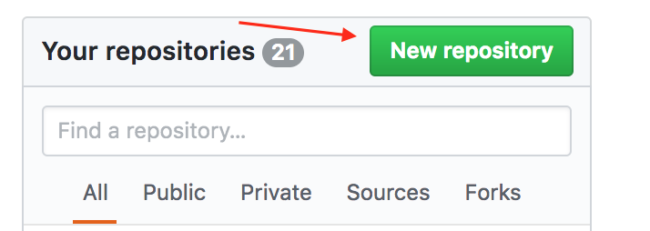
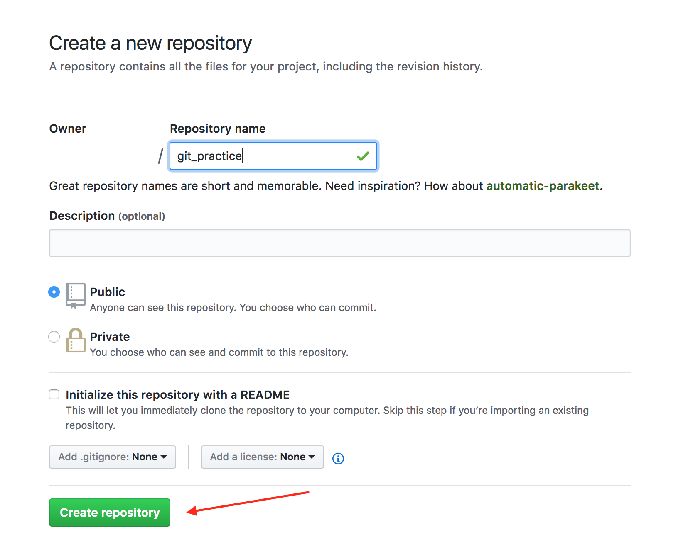
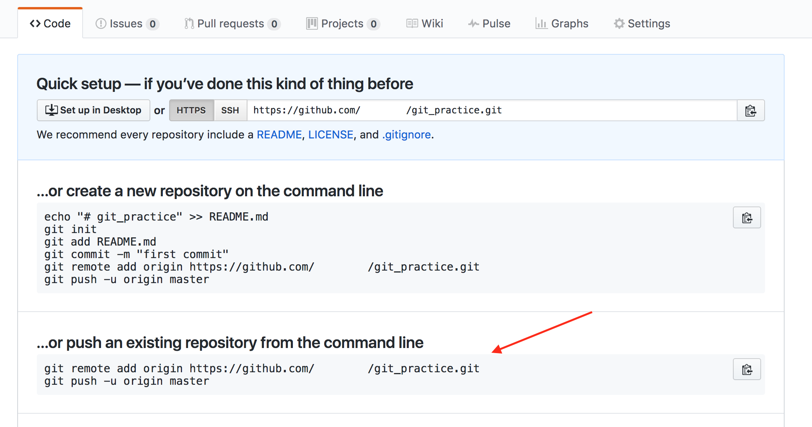

Learn Git
Initializing a Git Repository
cd /directory
git init
Checking the Status of a Git Repository
git status
Adding files to the staging area in Git
git add filename
git add .
Checking the differences between the working directory and the staging area
git diff filename
git diff
Storing changes from the staging area inside the repository
git commit filename
git commit .
Standard Conventions for Commit Messages:
- Must be in quotation marks
- Written in the present tense
- Should be brief (50 characters or less) when using -m
View commit history
git log
Output:
- A 40-character code, called a SHA, that uniquely identifies the commit. This appears in orange text.
- The commit author (you!)
- The date and time of the commit
- The commit message
Getting Started with Git and GitHub
git --version
Setup Git
Set up Git
Download and install the latest version of Git
Download and install the latest version of Git.
Setting your username in Git
Setting your username in Git
$ git config --global user.name 'nanodotbot'
$ git config --global user.name
> nanodotbot
Setting your commit email address
Setting
your commit email address
$ git config --global user.email "63056458+nanodotbot@users.noreply.github.com"
$ git config --global user.email
> 63056458+nanodotbot@users.noreply.github.com
New repository

Create repository

Initially push existing repository

git add remote origin https://github.com/nanodotbot/_git
git push -u origin master
Check remote url
git remote get-url origin
git remote show origin
How to Backtrack
HEAD commit
git show HEAD
Restore file in working directory from last commit
git checkout HEAD filename
Unstaging a file from staging area
git reset HEAD filename
git reset -- filename
git reset -- *
Reset to a previous HEAD revision
git log
git reset commit_SHA
git log
